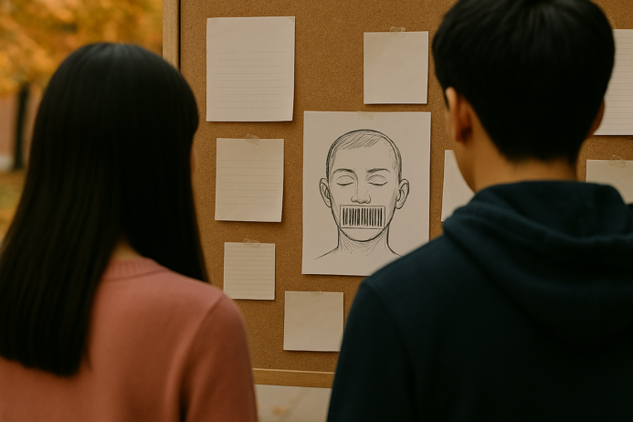

Jun anonymously posted a painting on the wall: the barcode of the locked mouth and forehead, which caught the attention of Rose and Jack.
Jack takes the hint seriously, becoming more vigilant and searching for possible opponents.
Jun stays at a distance, quietly observing everyone's reactions.